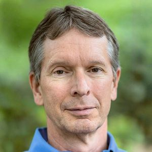

University of California, Irvine, CA, USA

The Recursive Trace Logic of Observers and Agents I propose that observers and agents are prior to the theories they create of spacetime and quanta. I propose that each observer has a repertoire of experiences, that these experiences change probabilistically, and thus that each observer can be modeled by a Markov matrix. The set of all observers is modeled by the set of all Markov matrices. I describe a newly-discovered, non-Boolean “Trace logic” on this set, a Leibnizian “pre-established harmony” among observers. I define a "simple agent" as a Markov matrix on the set of observers, and the set of all such agents again has a trace logic. A "second-order agent" is a Markov matrix on simple agents, and the set of all such agents again has a trace logic. This recursion proceeds indefinitely, leading to the “recursive trace logic,” a Leibnizian “pre-established harmony” among observers and agents. I conjecture that spacetime and quanta arise from this recursive trace logic. More technically, the trace operation here is the Schur complement, not the sum of diagonal elements. Given an ergodic Markov matrix M and a subset S of its states, the trace operation yields a unique Markov matrix M_S on S. The trace logic is defined by noting that this trace operation induces a partial order on the set of all Markov matrices: P <= Q iff P is a Schur-complement trace of Q. Given any matrix Q, the set of all matrices less than Q form a Boolean sub-logic of the trace logic. There are infinitely many Boolean sublogics in the trace logic. The recursive trace logic is the logic of zero surprise, in two ways. First, the trace matrix states precisely the transition probabilities one observes among the visible states, when the remaining states are hidden. Second, the stationary measure of the trace matrix is the normalized restriction of the stationary measure of the original matrix. Minimizing surprise is an important aspect of intelligence. So the recursive trace logic is a promising architecture for artificial intelligence. To each Markov matrix one can associate a counter that increments with each state transition. The counter of a trace increments more slowly than the counter of the original matrix. We propose that this is the source of time dilation in relativity. Diffusion times between states are shorter in the trace than in the original. We propose that this is the source of length contraction in relativity. If you pick two states x and y based on a uniform stationary distribution, the expected number of steps (or time) to transition from x to y is minimized when the transition matrix forces the process to move sequentially along a cyclic path. We propose that this is the source of a maximum speed, the speed of light, in spacetime.
Donald Hoffman received his PhD from MIT, and joined the faculty of the University of California, Irvine in 1983, where he is a Professor Emeritus of Cognitive Sciences. He is an author of over 100 scientific papers and three books, including Visual Intelligence, and The Case Against Reality. He received a Distinguished Scientific Award of the American Psychological Association for early career research and the Troland Research Award of the US National Academy of Sciences. His writing has appeared in Edge, New Scientist, LA Review of Books, and Scientific American and his work has been featured in Wired, Quanta, The Atlantic, and Through the Wormhole with Morgan Freeman. He has a TED Talk titled “Do we see reality as it is?”